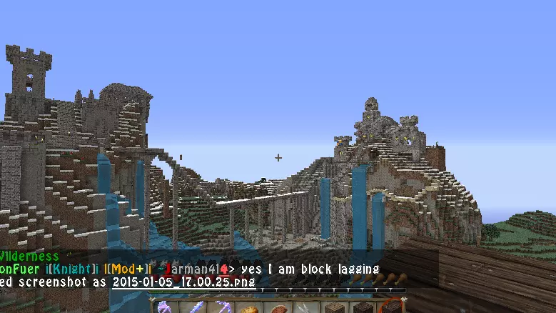

D_loaded and Ben build the first Don Fuer on Ben's server while attempting to take back Ben's city from the Highwaymen, a rival group.
2013
A second Don Fuer was built on the ruins of the city, but is eventually found. After a map reset, a third DonFuer is built to function as a main area for the new map.
DonFuer 4 is built underground on Ben's server. To protect it, a decoy town is built on the surface, but is renamed to DonFuer 5 once it grows bigger than the former.
2014
DonFuer 6 is built on a small factions server next to an allied faction. D_loaded builds free houses in exchange for protection. DonFuer 6 is griefed, but D_loaded rebuilds it in a single weekend, calling it DonFuer 7.
 DonFuer 7Ben betrays D_loaded and brings the Highwaymen to the cities.
2015
2016
DonFuer has a branch on 2b2t and a branch on AnarchyHeroes, HermeticLock's server. DonFuer 9 is griefed in a "civil war" between its 2b2t and AnarchyHeroes members.
DonFuer 10 is built on 2b2t, but is eventually griefed while HermeticLock is touring the base. (CHECK FOR ACCURACY)
2017
DonFuer 11 is created, but then abandoned when HermeticLock starts the Spawn Masons. After DonFuer 12, the group moves to a small factions server called IcedMC.
DonFuer 13 is built on IcedMC, but the server owner removes the city after a DonFuer member, Dragonworm, builds a watercube at spawn.
2018
DonFuer moves back to AnarchyHeroes, but their creation of the DonFuerian Hitting Rod upsets established players, who rebel and although they failed, they still manage to destroy DonFuer 14. Many apologize and join DonFuer.
DonFuer moves to AMC and builds DonFuer 15. It is eventually griefed by a member after losing a supcom game.
DonFuer 16 is built on AnarchyHeroes in one of the oldest sites on the server.
DonFuer 17 is built on a server called GeoCraft and is notable enough to become a warp hub for its region.
2019
After DonFuer leaves GeoCraft, it becomes inactive. D_loaded promotes many people, but the group becomes inactive and D_loaded disbands DonFuer.
After a short break, D_loaded comes back to 2b2t and joins the Spawn Masons. As the solo builder of their base, he decides to call it DonFuer 18. A FitMC video is made about DonFuer and the Spawn Masons, and HermeticLock and D_loaded create the Guardsmen.
Leaders of DonFuer rebuild the group and move to DestroyMC. DonFuer and Deadwood, a group led by an elder in DonFuer, build a group base. DonFuer's elders, concerned about Deadwood's intentions, decide to grief the base.
D_loaded and Dragonworm build several new bases on 2b2t and the group is revived. A Japanese-themed base, Karakorum, is renamed to ChongFuer because the members refer to it as such.
2020
DonFuer DMC moves to NetherAnarchy, and DonFuer 19 is built. After the owner of NetherAnarchy is doxxed, the server shuts down and DonFuer moves to PhoenixAnarchy.
DonFuer 20 is built on 2b2t, but is leaked to the Spawn Masons. Over a long period of time, they harass the base members until the base is eventually griefed. While they try to claim the base for their own, calling it COVID-2147, they are partially unsuccessful.
2021
DonFuer 2b2t starts recruiting through Spawn Rangers, a separate division. As the group quickly grows, a new elder called Zeiss is tasked with leading the group, but is eventually succeeded by volker1 as the group grows even more.
D_loaded starts a new branch on Stoneworks, a faction server. While it has a rough start, it eventually survives and grows enough to rival other branches.
A small rebuilding group called "Guardians of History" rebuilds DonFuer 10 on 2b2t. It is one of the only bases on the server of its size to be entirely rebuilt, block-for-block.
DonFuer 21 is built on 2b2t, and is one of the only DonFuer bases to have a mostly modern theme. It is unexpectedly griefed when an improperly sanitized world download reveals the coordinates.
After the NoCom exploit goes public, DonFuer starts a new base. After some internal drama, the group moves to a new location and builds DonFuer 22, the biggest DonFuer base ever. It is griefed by former members who used the infamous Log4Shell exploit to hack a group member.